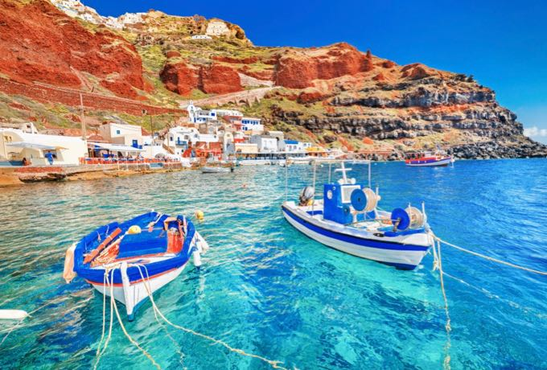
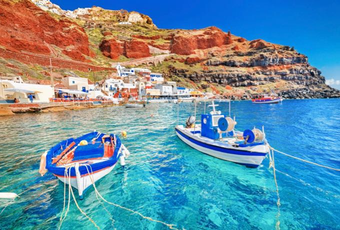
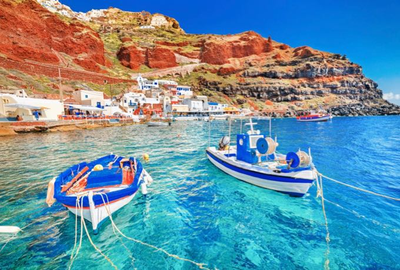

Picture Gallery
From Santorini, Greece
 

A Strong willed, Compassionate, Hard working environmental scientist
| Qualified environmental science major,trained in GIS system software seeking career in related field. Experience in field work in tidal and wetland areas, invasive species research, and stump research. |
| Field work and research experience. | Computer savvy (Microsoft Office programs) | |
| GIS knowledge, use/experience. | SPSS software for statistical analysis. | |
| Disciplined, hard-working.. | Proficient typist. | |
| Adept at working with others. | Analytical-minded. | |
| Professional and responsible attitude, good at working independently. Punctual/energetic. | Front office operations experience. | |
| Project management. | Complex, program design experience. | |
| General office skills. | Troubleshooting issues with computers/hardware. | |
| Multitasking abilities. |
| Bachelor of Science: Environmental Science , 2013; Virginia Commonwealth University (VCU)- Richmond, VA. 23220. Emphasis in field work for my degree. Spent many hours with different research teams, on different projects collecting and analyzing data. Degree is heavy in science, statistics and chemistry as they apply to environmental conservation. | ||
| Associate of Science: Social Science, 2009;Northern Virginia Community College (NOVA)- Annandale, VA. 22152 | \
| NASM National Academy of Sports Medicine CPT (Certified Personal Trainer) Certification | |
| NASM National Academy of Sports Medicine Functional Training Certification | |
| NASM National Academy of Sports Medicine Special Populations Training Certification |
From Santorini, Greece
